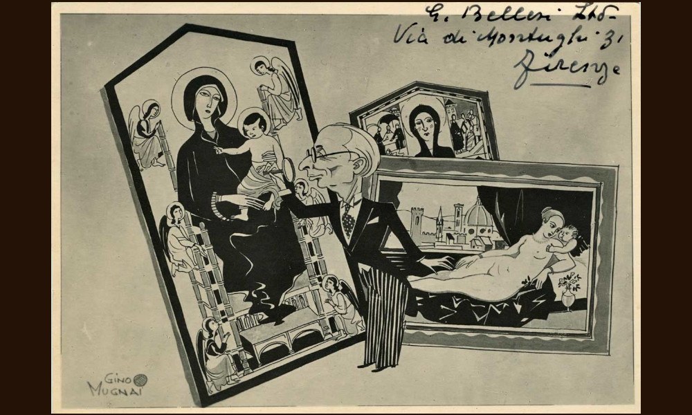

Bellesi

- Dati biografici
- Albero familiare
- Luoghi
- Relazioni
- Bibliografia
- Opere trattate
La famiglia Bellini ricoprì un ruolo di spicco nel panorama del mercato antiquario fiorentino del Novecento. Luigi Bellini (1884-1957) si avvicinò al commercio di opere d'arte grazie al padre Giuseppe, che possedeva una bottega antiquaria tra via della Spada e via del Sole. Si legò presto agli antiquari attivi in città da più lunga data, tra cui Stefano Bardini (1836-1922) e Vincenzo Ciampolini (1830-1930).
Specializzatosi in dipinti, sculture, arazzi dal Rinascimento al Settecento, nel corso degli anni Venti Bellini acquistò un palazzo in Lungarno Soderini 5, che divenne la sede principale degli affari e della galleria di famiglia. Nel 1931, aprì inoltre uno spazio espositivo in Palazzo Spini Ferroni in Piazza Santa Trinita 5/r, dove esponeva artisti contemporanei. La galleria inaugurò nel 1932 con la mostra dello scultore Arturo Martini e del pittore Primo Conti.
Nel 1940 acquistò e ristrutturò la villa Medicea di Marignolle, dove collocò la sua collezione d'arte, poi venduta all'asta nel 1976 insieme all'immobile.
Luigi Bellini con i figli Giuseppe (1909-1994) e Mario (1913-2006) idearono la Mostra Nazionale di Antiquariato, che divenne poi nel 1959, sotto il patrocinio dei suoi eredi, la Biennale Internazionale dell'Antiquariato.
Nel 1947 pubblicò Nel Mondo degli antiquari e postumo uscì Bozzetti antiquari, memorie e aneddoti personali che offrono una panoramica sul mondo del mercato dell'arte della prima metà del Novecento.
Alla morte di Luigi, avvenuta nel 1957, i figli proseguirono l'attività di famiglia, poi ereditata dal figlio di Mario, Luigi (1944-2021). Nel 2011 parte della collezione di Mario e Giuseppe Bellini, comprendente sculture dal Medioevo al Rinascimento, dipinti di maestri primitivi, mobili e oggetti d'arte, è stata messa all'asta dalla casa d'aste Semenzato.
Dal 2007 la galleria di Lungarno Soderini è sede del Museo Privato Luigi Bellini.
Altri antiquari:
Clienti:
Collaboratori:
- Matteo Maranghoni (storico dell'arte)
- Robert Langton Douglas (storico dell'arte)
Bibliografia essenziale:
- Vendita all’asta dell’importante raccolta di dipinti antichi, mobili, oggetti d’arte e di arredamento, argenterie e preziosi appartenenti alla Successione di Miss Rita Miriam Bellesi, catalogo della vendita all'asta Pandolfini (Firenze, 14-17 ottobre 1968), Firenze 1968
- Bracke, P. (2008-2009), L'antiquario Giuseppe Bellesi e il suo fondo fotografico all'interno della Fototeca Zeri, Università di Bologna
- Marangoni, M. & Barreca, L. (2006), Matteo Marangoni : Carteggi (1990-1958), Palermo, Editrice Mediterranea
- Sanvitale, F. (2002), La romanza italiana da salotto, Torino, EDT.
Vedi le opere transitate presso l'antiquario presenti nel catalogo della Fondazione Zeri